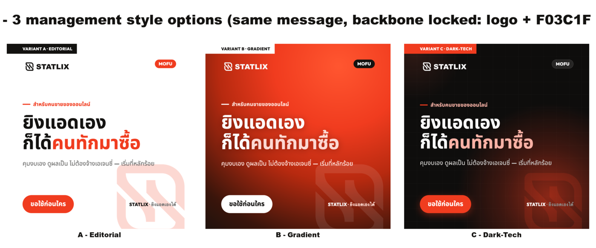
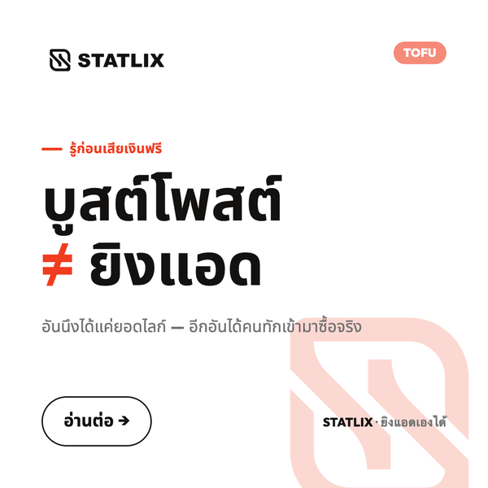
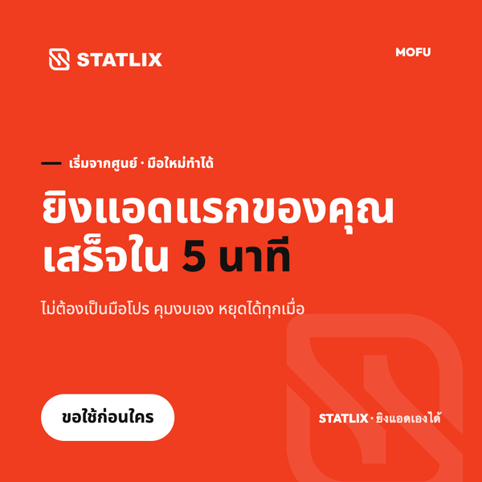
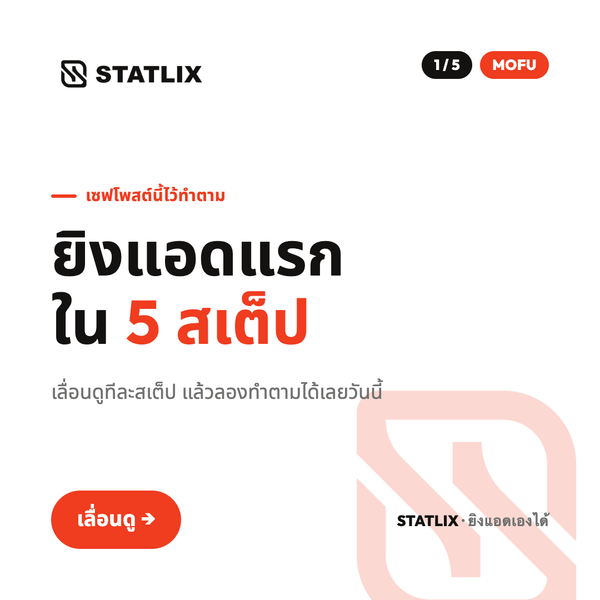
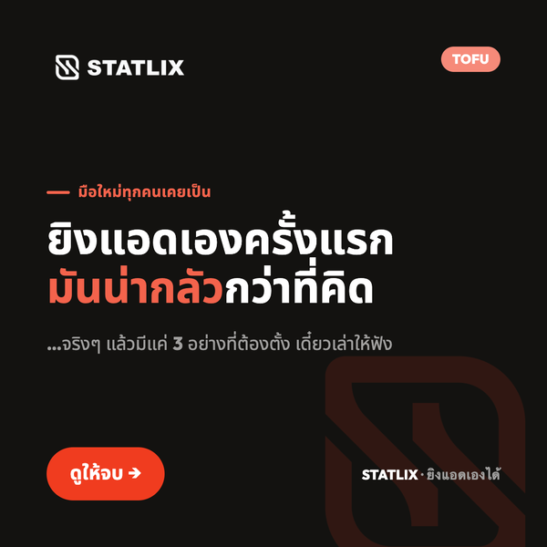
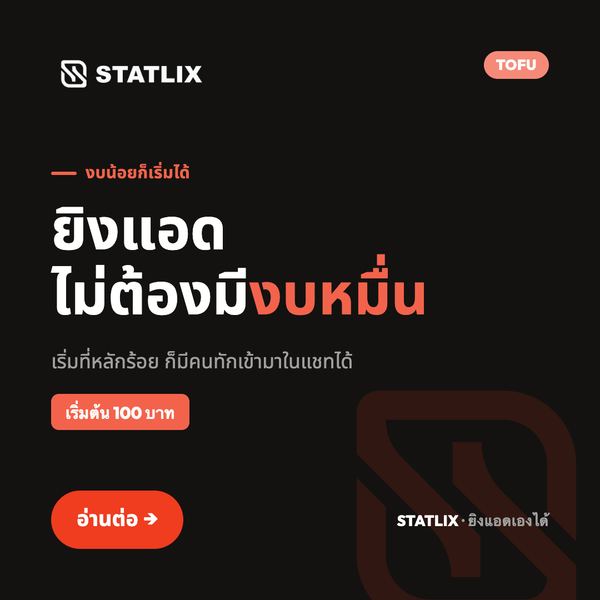
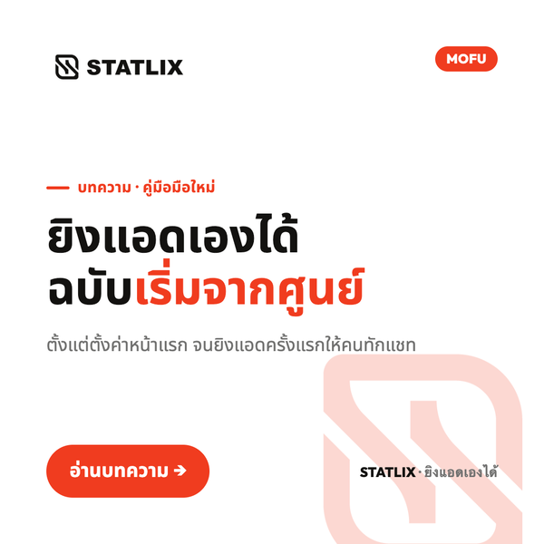
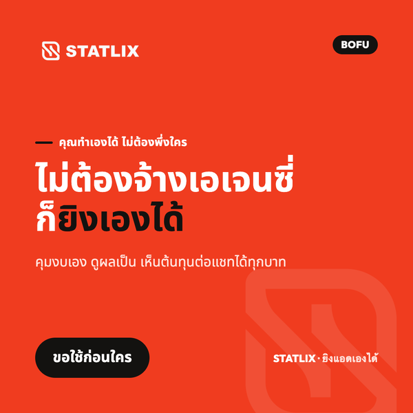
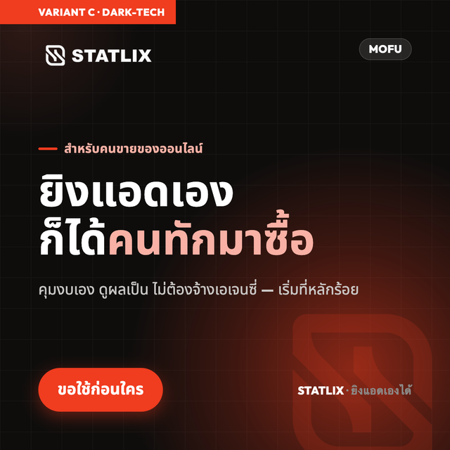

02 · คอนเทนต์โซเชียล
เทมเพลตโพสต์ที่คุมโทนได้ทั้งระบบ
ข้อความเดียว เลือกได้ 3 สไตล์ — Editorial (สะอาด) · Gradient (เด่น) · Dark-Tech (พรีเมียม) — ล็อกโลโก้/สี/ฟอนต์ไว้ทั้งหมด

เสา 1 “ยิงแอดเองได้” — 7 มุม พร้อมโพสต์
ทุกชิ้นมีโค้ดตาม funnel (TOFU/MOFU/BOFU) → ตามผลและทำ A/B ได้ · ผลิตซ้ำเร็วผ่านระบบเทมเพลต







